Getting Started
Table of Contents
- Introduction
- Setting up your Raspberry Pi®
- Setting up your Raspberry Pi® with a monitor and keyboard
- Connect to the Internet
- Download our sample client
- Connect using the BigPond® USB 4G mobile broadband dongle
- Send GPS coordinates to the server and display your position on a Google map
- Setup remote connection to your Raspberry Pi® via SSH
- Setting up the Virtual Machine
- Get your VM
- Create an unprivileged user
- Installing and configuring your web server on your VM
- Clone the application server code to your VM
- Build your webserver on your VM
- Send data from your Raspberry Pi® to your VM
- Supporting Material
Introduction
-
Aim of this guide
Writing a Machine-To-Machine (M2M) application can be daunting. The purpose of this tutorial is to step you through the setup of a Raspberry Pi®, BigPond® USB 4G dongle, and Remote Virtual Machine (VM). This will assist you to become familiar with these components. By the end of this tutorial, your Raspberry Pi® will report its GPS co-ordinates to a virtual machine hosted at Telstra, and you will be able to modify the code on both the Raspberry Pi® and the VM. You are free to use any of the code that Telstra provides, and please suggest bug fixes where necessary.
Discussion and collaboration between teams is encouraged through the use of GitHub. Although it is important not to reveal your idea or solution, where there is group benefit (e.g. improvements to the collaborative code provided by Telstra) then the teams are urged to contribute. GitHub will be introduced later.
This tutorial will help you:
- Set up your Raspberry Pi®;
- Get wireless connectivity working using a BigPond® USB 4G dongle;
- Run the provided sample GPS client;
- Set up a VM server.
-
Technical Document Scope & Support
The diagram below shows the elements you will interact with during this tutorial.
- The Raspberry Pi® is a small computer which has standard I/O ports to allow you to connect external devices that you may need for your solution. The BigPond® USB 4G dongle provides wireless connectivity to transfer data. The BigPond® USB 4G dongle has an inbuilt GPS, which during this tutorial, we will use to acquire and transmit GPS data.
- A VM server inside Telstra's Cloud Lab running Linux, is provided to you to support your application being developed on the Raspberry Pi®.
In the example application, this VM server is configured to do two things:
- Receive GPS co-ordinates, and team name submitted via JSON requests from the Raspberry Pi®
- Provide a complete list of GPS co-ordinates most recently received for each Raspberry Pi® that has reported GPS data
These two functions make it possible for the server to provide a map illustrating the locations of each of the devices. This is provided using Google Maps, which is hosted on the M2M Challenge website.
- GitHub is a website that allows you to share source code. Telstra has a repository on GitHub that contains the Telstra example client collaborative code and example server code.

The Getting Started guide is written from the perspective of using a monitor and keyboard directly connected to the Raspberry Pi®. Alternatively you might prefer to set up the Raspberry Pi® remotely by SSHing to the device. One advantage of the former approach is that losing network connectivity does not affect your ability to configure the device. This can be useful when starting out with the Raspberry Pi®. If you do choose to set up your Raspberry Pi® over SSH, you might like to skip ahead to Section 2.ii: Connect to the internet and refer to Section 2.vi for SSHing information if required and to the Troubleshooting section at the end “Using remote access for Raspberry Pi® initial set up”.
During the pre-challenge period Telstra will provide support to teams to ensure they can complete the Getting Started guide, but no other technical support. Once the challenge commences (15 July 2013) additional technical support is provided. Technical questions can be shared via GitHub or emailed directly to Telstra via the support email address.
Setting up your Raspberry Pi®
-
Setting up your Raspberry Pi® with a monitor and keyboard
Connect all the cables as shown in this official quick start guide. The SD card provided has a copy of the required Raspbian Operating System ISO image written to it.
Note: A powered USB hub may be useful here. We have found that the Raspberry Pi® cannot drive a mouse, keyboard, and the BigPond® USB 4G dongle simultaneously. A powered USB hub can be used to get around this.On first booting up your Raspberry Pi® you should see the raspi-config screen. In this tutorial we shall be using the graphical desktop. Select the
“boot_behaviour”option and select“Yes”i.e. boot to desktop. Boot again and you should see following start up screen.
-
Connect to the Internet
Our first step will use the built-in Ethernet port to retrieve the Python scripts from GitHub. We will later use the scripts that are fetched to activate the Wireless interface.
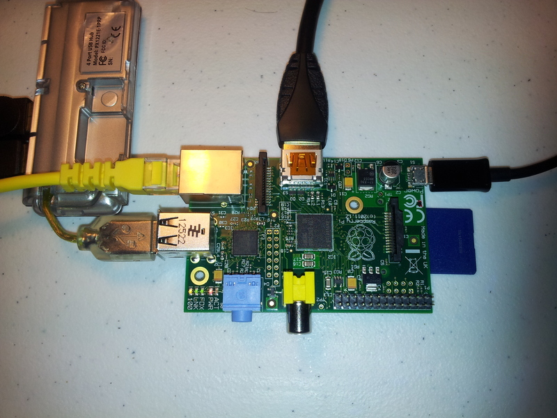Open the LXTerminal by locating the icon on the Raspbian desktop and executing it to show the picture below.

Note: On a Raspberry Pi® / keyboard combination that we tested, the keyboard map was incorrectly set, which caused incorrect characters to display when typing. If you have a similar issue, you can use the following command to manually set the keyboard map to 'us' aswell as permenantly configure through raspi-config.pi@raspberrypi ~ $ setxkbmap us
Use the ifconfig command to list the interfaces which are active on your Raspberry Pi®
pi@raspberrypi ~ $ ifconfig
On our Raspberry Pi®, under Raspbian, the eth0 interface corresponded to the wired ethernet port. After connecting an Ethernet cable to the Raspberry Pi® (assuming there is a DHCP server on your network) your Raspberry Pi® should request and recieve an address automatically. eth0 needs to recieve an ip address (the example in the figure below is 192.168.20.100). If an IP address is shown then, congratulations, you are now connected to the internet!
Note: If you are using your university LAN connection, you may encounter that you cannot establish and internet connection. This could be because your university has a firewall restricting access. You may need to try a internet connection at home or try using your BigPond® USB 4G dongle with a portable 3G Wireless router with an ethernet port available.eth0 Link encap:Ethernet HWaddr b8:27:eb:4b:5e:22 inet addr:192.168.20.100 Bcast:192.168.20.255 Mask:255.255.255.0 UP BROADCAST RUNNING MULTICAST MTU:1500 Metric:1 RX packets:8 errors:0 dropped:0 overruns:0 frame:0 TX packets:7 errors:0 dropped:0 overruns:0 carrier:0 collisions:0 txqueuelen:1000 RX bytes:1890 (1.8 KiB) TX bytes:200 (200.0 B) lo Link encap:Local Loopback inet addr:127.0.0.1 Mask:255.0.0.0 UP LOOPBACK RUNNING MTU:16436 Metric:1 RX packets:5 errors:0 dropped:0 overruns:0 frame:0 TX packets:5 errors:0 dropped:0 overruns:0 carrier:0 collisions:0 txqueuelen:0 RX bytes:1000 (1.0 KiB) TX bytes:1008 (1.0 KiB) -
Download our sample client
The next step is to enable your wireless connection by downloading the sample client from Git.
First, update the system's package database, install python serial library and the git command line client.
pi@raspberrypi ~ $ sudo apt-get update pi@raspberrypi ~ $ sudo apt-get install python-serial pi@raspberrypi ~ $ sudo apt-get install git [press 'enter'] pi@raspberrypi ~ $ git clone https://github.com/telstra/m2m-university-challenge.git [type 'yes' if prompted]
You should now have a local instance of our client, and server repository on your Raspberry Pi®. You can check this by typing the following command:
pi@raspberrypi ~ $ cd m2m-university-challenge; ls
The output from the command above should include the folders listed below:
example-client-python example-server-haskell m2m-static-html
You now have a local git repository in the folder m2m-university-challenge, where you can modify all the source code.
-
Connect using the BigPond® USB 4G mobile broadband dongle
Insert the M2M SIM into the BigPond® USB 4G dongle. If you are unsure how to do this there is a booklet with the dongle that shows you how to insert the SIM.
Then insert the BigPond® USB 4G dongle into the Raspberry Pi® USB port.
Warning Take care when connecting and disconnecting devices to the Raspberry Pi®. In our testing, our Raspberry Pi® rebooted upon connecting the BigPond® USB 4G dongle, so you may want to check that your work is saved.Also Please Note: At this point you may have the Ethernet port and BigPond® USB 4G dongle connected simultaneously. While there are tools in linux to handle multiple interfaces, this solution is currently out of scope for this tutorial (However, as a challenge, your welcome to try yourselves!). Hence, for the remainder of this tutorial, we recommend that you disconnect the Ethernet port and ONLY leave the BigPond® USB 4G dongle connected!
In LXTerminal, type the following commands
pi@raspberrypi ~ $ cd m2m-university-challenge/example-client-python; ls
See the script called gpsclient.py
gpsclient.py gpsclienttest.py
The python script above provides an example of how you can:
- Turn on your BigPond® USB 4G dongle.
- Assign the correct APN to the device so that it can be publically accessible.
- Send data from the Raspberry Pi® over the Next G® network to a VM server in the Telstra Cloud Lab where we are able to store the GPS coordinates from the BigPond® USB 4G dongle.
To launch the script, script type:
pi@raspberrypi ~/m2m-university-challenge/example-client-python $ sudo python gpsclient.py
Where the following response should be:
[ -- ] System Initiating Setup [ -- ] Creating Queue Threads [ OK ] Modem Echo On [ OK ] SIM Card IMSI is 505013499180520 [ OK ] Modem IMEI is 357272044593295 [ OK ] Pi CPU Serial ID is: 000000006e59e7f5 [ -- ] Pi wwan0 NOT connected attempting to re-establish now [ -- ] Running command to power up modem [ -- ] Running PDP Connection Commands [ -- ] DHCP Release [ -- ] Ensuring PDP connection closed [ -- ] Setting APN in profile 1: sudo echo -e 'AT+CGDCONT=1,"IP","telstra.extranet"' > /dev/ttyUSB3 [ -- ] Setting Profile 1 as default [ -- ] Setting profile 1 as manual connection [ -- ] Activating PDP connection on profile 1 [ -- ] DHCP Renew [ OK ] Successfully obtained IP address on wwan0 [ -- ] Wwan0 IP address same as last acquired address 123.209.149.19 [ OK ] System Setup Complete *****************************
If you get the response above, it means that the USB port where the BigPond® USB 4G dongle is connected (wwan0) is configured with an Access Point Name (APN) of telstra.extranet and has established a connection to the internet.
Note: Your IMEI and IMSI will be unique for your device. Please note your wwan0 IP Address, as you will need it when you SSH into your device in a later step.Note: If at this stage you're having connection problems it may be worth checking:- Whether the serial port is configured correctly. You may wish to Check the serial port with Minicom in the Troubleshooting section.
- If the APN is configured correctly. Please see Trouble configuring your APN in the Troubleshooting section.
Note: If your device disconnects from the network, on your next power up to attach to the network it is likely to be assigned a new IP address. In the following steps, you will configure a Virtual Machine. You may wish to configure your Raspberry Pi® to report its IP address to the VM periodically, since the VM's IP address will remain constant, allowing you to locate the address of the Raspberry Pi® as it varies.At this point you will need to terminate the script by pressing
"CTRL"and"c"together.You can verify that you are connected by typing the following code in the LxTerminal.
pi@raspberrypi ~/m2m-university-challenge/example-client-python $ ifconfig

You should have the same IP address against wwan0 which has been assigned to your BigPond® USB 4G dongle(as above 123.209.11.44), you are now connected to the internet via the wireless interface.
-
Send GPS coordinates to the server and display your position on a Google map
Please Note: This will display your kit's position on the Challenge map. This map will be visible to other contestants when your kit is powered up. If you do not want the position of your kit made public then please move to the next step.Return to the LxTerminal and type the following command:
pi@raspberrypi ~/m2m-university-challenge/example-client-python $ sudo nano gpsclient.py
This will open the python file into a text editor.
Within this text editor, under "Global Variables" please edit your team name. This will be the displayed on the Google map.
# Global Variables ...... displayString = "Team ??" # Change diplayString to reflect your team name
After the following edits have been made, hold
“Ctrl”+“x”(prompting you to save the file) then press“Y”(for yes) then“Enter”to keep the same file name.Next return to LXTerminal and type the following commands:
pi@raspberrypi ~/m2m-university-challenge/example-client-python $ sudo python gpsclient.py
This will relaunch the script as in the previous step.
If the script successfully initiates, you should see the following final response in the terminal.
[ OK ] Fix Session Status = ACTIVE Posting GPS coordinates lat: -37.813475 and long:144.970997222 imei:357272044593295 imsi:505013499180520 cpuID: 000000006e59e7f5 displayString Team ?? arbitraryText UTC Timestamp is 2013-04-28 08:39:42 Server: nginx/1.3.14 Date: Sun, 28 Apr 2013 08:39:26 GMT Content-Type: application/json Transfer-Encoding: chunked Connection: close
Note: You may at this point get an exception thrown (ie. the script terminates or no GPS coordinates are given). Some suggestions to troubleshoot this are:- No GPS signal can occur due to the Raspberry Pi® being in an area where it cannot see the GPS satellites. Please try moving the Raspberry Pi®(with the BigPond® USB 4G dongle attached) closer to a window to ensure that the satellites are detected, then, relaunch the script. It is best to watch the output after the AT command
AT!GPSSATINFO?to see if there are any satellites in view. Once there is a satellite lock, it is expected a latitude and longitude result should follow this command. - tshark is useful to see what data is being transmitted. A typical command line for tshark is tshark -i eth0 -n port 80 which shows all traffic on port 80 on eth0.
- An exception is thrown due to server being down. Your device is working correctly but the sever inside Telstra which is trying to store your results is not accepting your HTTP POST request. The best thing to do here is to email our support team via the website process.
Before proceeding, you will need to terminate the script by pressing
"CTRL"and"c"together.On the Telstra M2M University Challenge map, which is on the Telstra M2M University Challenge website, you will now see a marker corresponding to your team name and clicking it should show you the data string which you typed in the python script earlier.
You have just successfully reported your GPS location on the map!
- No GPS signal can occur due to the Raspberry Pi® being in an area where it cannot see the GPS satellites. Please try moving the Raspberry Pi®(with the BigPond® USB 4G dongle attached) closer to a window to ensure that the satellites are detected, then, relaunch the script. It is best to watch the output after the AT command
-
Setup remote connection to your Raspberry Pi® via SSH
Install PuTTY (a Telnet and SSH client for MS Windows) from the following link if not already from your desktop.
Download “Putty.exe” and save on your desktop. Launch the program and configure the following details.

Under
“Host Name (or IP address)”please type in the IP address you got for wwan0 as previously noted. Leave“Port”as“22”and ensure the connection type“SSH”remains selected.Under
“Saved Sessions”please type your “team name” select“Save”. And finally press“Open”.If a connection is established you should see a “Security Alert Screen” shown below. This is indicating you're tunnelling into the device. Select
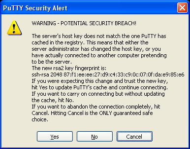“Yes”and proceed.In the putty terminal you will be prompted for your “username” and “password” if you didn’t set this at the beginning of this guide, the default values are
“pi”and“raspberry”.login as: pi pi@123.209.52.215's password: ... pi@raspberrypi ~ $
Once successful, you will see the familiar terminal. Congratulations you are now connected to your device!
Setting up Virtual Machine Environment
- Gathered data from your hardware;
- Sent your data to our web server;
- Displayed GPS data in a meaningful way on a web application;
-
Get your VM
The first step is to get access to the virtual machine. To avoid sending passwords via email, we provision access to the virtual machines by way of an ssh public key. If you've never used SSH keys like this before, this step might seem cumbersome. However, when you've completed it, you'll be able to securely log in without typing a password. To generate an RSA key pair:Accessing your VM from a Linux client
Under Linux, you can generate an RSA key pair with the following command:example@yourmachine:/home/user ~ $ ssh -keygen –b 4096
If you accept the default options, an RSA key will be generated and saved to the .ssh directory in your home directory. The public key file will have the name id_rsa.pub and the private key will have the name id_rsa. Copy the contents from id_rsa.pub into an email, and send it to the email support address. We'll send you back the IP address of your VM server, and you will be able to login using your private key to authenticate yourself.Accessing your VM from a Windows client
- Downloaded PuTTYgen from link.
- Launch PuTTYgen (where you will see the screen below).
- Press
“Generate”button. - You will need to move the mouse to generate the key, where you will get the expected output below.
- [OPTIONAL] Protect the key file by entering a passphrase into the two empty textboxes. This will be requested to log into the VM. (highly recommended)
- Click
“Save Private Key”. - For the PuTTY session, direct the program at the private key file for the ssh key. (see image below)
- Copy the contents of the ssh key into an email, and send it to the email support address. We'll send you back the IP address of your VM server, and you will be able to login using your private key to authenticate yourself. Please ensure you send the key with the same format below, with your user name included!
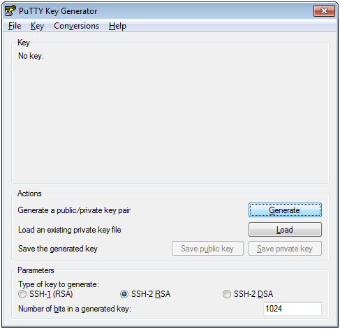

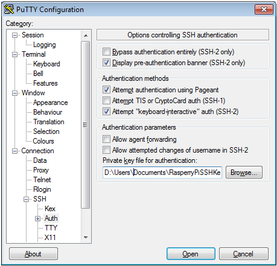
ssh-rsa AAAAB3NzaC1yc2EAAAABJQAAAIBaGB3ge46H8GOjcdEgyn6ZR63IUqoGRGF1BnHTaISHTOr/97MlPRI5ykmr/S8cEL0Bf+UwmEyfCkflaNs+HRTpBu6JwiPFmuCOrI/GENTQyNE3Bm6wV/oXp/Ym2IPHt9j9pEmRRXsStJ37LphgiXoa+ewisWvpuY58OheP9b9dGQ== your_user_name
-
Create an unprivileged user
You should avoid using the root account as your everyday account where possible. The root account provides very little room for error - rm will successfully remove important files, and if a script you are developing goes awry, there is very little to stop it. Additionally, if you work from the server, it can be annoying to share a single user environment. An easy mitigation for this is to create an unprivileged user for each member of your group. To do this, use the command adduser. The following is a transcript from creating a user tom as root.root@m2mteam00:~# sudo adduser tom [sudo] password for root: Adding user `tom' ... Adding new group `tom' (1002) ... Adding new user `tom' (1002) with group `tom' ... Creating home directory `/home/tom' ... Copying files from `/etc/skel' ... Enter new UNIX password: Retype new UNIX password: passwd: password updated successfully Changing the user information for tom Enter the new value, or press ENTER for the default Full Name []: Tom Citizen Room Number []: Work Phone []: Home Phone []: Other []: Is the information correct? [Y/n] y
-
Installing and configuring your web server on your VM
You should now be able to log into your virtual machine using the provided username and your private key.
As many of the commands to follow require root permission to execute. You will need to enter a command to give the user 'tom' this access. This can be done as follows.
root@m2mteam00 ~ # sudo usermod -a -G sudo tom
After giving 'tom' root access, we can proceed with installing nginx which is a HTTP and reverse proxy server as 'root'.
root@m2mteam00 ~ # sudo apt-get install nginx-full
After installation, access the nginx folder by typing the following.root@m2mteam00 ~ # cd /etc/nginx; ls
In the Nginx folder you should see two folders called "sites-available" and "sites-enabled". Next type:
root@m2mteam00:/etc/nginx ~ $ cd sites-available
In this folder you will create a configuration file which lists the Telstra M2M University Challenge web applicaton domain. Open a text-editor. The following example uses nano, but you may prefer vi or another editor.
root@m2mteam00:/etc/nginx/sites-available ~ # sudo nano
While in the text editor copy the following configuration file.
server { listen 80; server_name 203.42.134.221; access_log /var/log/nginx/203.42.134.221.access.log; location / { root /home/tom/m2m-university-challenge/m2m-static-html/; auth_basic "Restricted"; auth_basic_user_file /etc/nginx/htpasswd; } location = /api/position { allow all; proxy_pass http://127.0.0.1:8000/api/position; } }You should replace the server_name with the IP address of your virtual machine and also the user name you created!
Please Note: At this stage, you may have noticed that the web server you have configured has been for one user. In this exercise we assume that there will be multiple users configured according to the number of developers in your team. If this is the case, you may have thought of the issue of multiple web servers binding on a single port. As you may have suspected, you cannot have multiple users bind to port 8000. You will need to ensure that for each user you create, a new port used in this configuration file, and hence the url you setup reflect the port you are pointing to!Save this file by pressing
"Ctrl"and"x"name the file. For the purposes of organisation, you may wish to name the file after the IP address of the host that it is serving. On http://203.42.134.221, we use the name 203.42.134.221.The file you have just created has three sections, running from the top to the bottom. They do the following:
- The first group of statements configures an HTTP server to listen on port 80. You can see that this configuration is for the host 203.42.134.221, and that logging of access requests is to the file /var/log/nginx/203.42.134.221.access.log
- The second group of statements configures the general policy for the server - namely, to serve static HTML files out of the user example's home directory, in the subdirectory m2m-university-challenge/m2m-static-html. Access is only permitted if the user provides the correct password, which the server looks up in /etc/nginx/htpasswd
- The third group of statements creates an exception to the general rule immediately above for the location /api/position. This path is accessible without a password. Additionally, rather than serving static HTML, requests are forwarded to the server running on the local machine (127.0.0.1) on port 8000. In this configuration, no authentication is performed by nginx before allowing getting or setting positions. Additionally, an unprivileged user is able to execute the server, since the bound port is not a privileged port.
To activate the configuration, you will now create a symbolic link to the configuration file that you just wrote. For our server at http://203.42.134.221, this was achieved using the following command.
root@m2mteam00:/etc/nginx/sites-available ~ # sudo ln -s /etc/nginx/sites-available/203.42.134.221 /etc/nginx/sites-enabled/203.42.134.221
Your command will differ slightly, depending on what you have named your configuration file above. Note that this arrangement - having an original file in sites-available, and a symlink in sites-enabled, allows you to conveniently disable sites served by nginx by simply deleting the configuration in sites-enabled, while retaining the configuration in sites-available.
You should configure your server to require a username and password prior to logging in, in order to prevent unauthorised users from seeing your site. To do this, install the Apache utilities:
root@m2mteam00:/etc/nginx/sites-available ~ # sudo apt-get install apache2-utils
Configure the password for your username by inserting these in the fields below "your_username"
.root@m2mteam00:/etc/nginx/sites-available ~ # sudo htpasswd -c /etc/nginx/htpasswd your_username
You can check if the file htpasswd exists by typing
lsin the console screenNext, check that nginx is configured correctly using the following command:
root@m2mteam00:/etc/nginx/sites-available ~ # nginx -t
The expected output is:
nginx: the configuration file /etc/nginx/nginx.conf syntax is ok nginx: configuration file /etc/nginx/nginx.conf test is successful
If the output returned is the same as above, than you nginx has been configured properly, congratulations!
You should now be able to start nginx like so:root@m2mteam00:~ # service nginx start
Nginx is now configured to point to 127.0.0.1:8000 when accesses are made to the URL /api/position. However, we have not yet configured the application server at that address. That's next! -
Clone the application server code to your VM
The next step is to clone the application server to your VM.
You may remember doing this for your Raspberry Pi® earlier in this tutorial and the steps are exactly the same.
First we must install git:
root@m2mteam00:~ # sudo apt-get install git
Now, change to unprivileged user (rather than as root) and clone the repository locally to your VM.
root@m2mteam00:~ # su tom tom@m2mteam00 $ git clone https://github.com/telstra/m2m-university-challenge.git
-
Build your webserver on your VM
Once the clone has finished, build the server:
tom@m2mteam00:/home ~ $ cd m2m-university-challenge/example-server-haskell/ tom@m2mteam00:/home/tom/m2m-university-challenge/example-server-haskell ~ $ sudo apt-get install cabal-install haskell-platform tom@m2mteam00:/home/tom/m2m-university-challenge/example-server-haskell ~ $ cabal update tom@m2mteam00:/home/tom/m2m-university-challenge/example-server-haskell ~ $ cabal install
Note: The istallation of the cabal takes a while, depending on you connection type (whether this is fixed or wireless dongle), this may take between 15-30 minutes!If successful, cabal will indicate that the build is complete, and has been placed in a directory, for example:
Installing executable(s) in /home/tom/.cabal/bin
The example server as written does not daemonize itself. When the controlling terminal exits (e.g. by disconnecting from the server), the server will terminate. We recommend installing tmux, which allows you to detach from your shell (leaving the server running) and re-attach later. For example:
You will need to start the webserver, which will bind to port 8000 by default. This can be done by the following instructions, still as user 'tom'.
tom@m2mteam00: ~ $ tmux
A new shell starts:tom@m2mteam00:/home/tom/m2m-university-challenge/example-server-haskell ~ $ cd dist/build/example-server/ tom@m2mteam00:/home/tom/m2m-university-challenge/example-server-haskell/dist/build/example-server ~ $ ls example-server example-server-tmp tom@m2mteam00:/home/tom/m2m-university-challenge/example-server-haskell/dist/build/example-server ~ $ sudo ./example-server
Server starts. Hold
control, hitb, then hitd. The text [detached] appears. Your server is now running, but you are not attached to it. To re-attach, type:tom@m2mteam00: ~ $ tmux attach
You can verify that the webserver forwards requests by attempting to access the URL, http://203.42.134.221/api/position in a browser, or using a command line tool such as wget or curl. You should see an empty JSON list indicated by [] initially.
Note: When accessing the address/api/position you may get a 502 Bad Gateway error message thrown. This is due to the webserver not executing properly. Ensure that when executing the instructionsudo ./example-server
that you allow the server to go through the entire installation process. If you don't the server won't work.Note: When accessing static pages, you will be asked to enter the username and password credentials you created earlier. If you forget these details, you can always log in as the root user and use the htpasswd command to update the details in /etc/nginx/htpasswd -
Send data from your Raspberry Pi® to your VM
While still within the VM environment, you want to first modify your local version of the Telstra M2M University Challange map which you will use to host your web application to retrieve data from the correct url position. You will do this by first opening your load_m2m_map.js file in a text editor.
tom@m2mteam00: ~$ cd /home/m2m-university-challenge/m2m-static-html/assets/js tom@m2mteam00:/home/m2m-university-challenge/m2m-static-html/assets/js ~$ nano load_m2m_map.js
In the area of the script where the json array is loaded to get the marker data you will need to point the url in the new direction to your VM (where in our example that is "http://203.42.134.221" ).
function addMarker() { $.ajax({ type: "GET", //url: "http://example.innovation.telstra.com/api/position", url: "http://203.42.134.221/api/position", async: false, dataType: "json", success: function(data){ teamArray = data; } });Next you will access your Raspberry Pi® by either using the workstation or SSH into the Pi as in the instructions Setup remote connection to Pi via SSH. And modify the gpsclient script to post the GPS data to the correct VM location.
pi@raspberrypi ~/home $ cd m2m-university-challenge/example-client-python pi@raspberrypi ~/m2m-university-challenge/example-client-python $ nano gpsclient.py
Within the text editor change the positionUrl so it points toward your VM server. In the example below, the Python script is modified to point to the IP address 203.42.134.221
# Global Variables .... #positionUrl = "http://example.innovation.telstra.com/api/position" # Target server for JSON upload positionUrl = "http://203.42.134.221/api/position"
Launch the gpsclient.py script and watch whether you get a successful post.
If successful you should see a marker on the Google map hosted on your VM server.
If you have seen the marker, congratulations, you have setup your webserver and have successfully completed this tutorial!
Supporting Documentation
Telstra Wireless M2M Control Centre Support
Troubleshooting Guide
-
Using remote access for Raspberry Pi® initial set up
If you want to set up your Raspberry Pi® by remote access only, without a monitor connected to it, then you will need to connect the Raspberry Pi® to a router so it is possible to find the device’s IP address. Once you have this it will be possible to SSH to the device. Refer to Section 2.vi: Setup remote connection to Raspberry Pi® via SSH. All the steps detailed in the Getting Started guide are applicable to this set up except skip over parts that refer to checking the graphical interface.
-
Loading the Raspbian Operating System on a SD card
Note: We will be providing SD cards with the Raspbian Operating System pre-installed hence this section are only for those considering using extra SD cards
Please Note The BigPond® USB 4G device requires Linux drivers which are not present in early versions of the Wheezy Raspberry Pi® image. We draw your attention to this because there is partial support under these drivers for data, and this partial support may obscure your attempts to debug. We recommend using 2013-02-09-wheezy .Open your favourite browser and go the official Raspberry Pi® download page ; here you will need to go to download two files an ISO image of Raspbian Operating System as well as ISO imager named 2013-02-09-wheezy-raspbian.zip and Win32DiskImager respectively.
Insert your 8-GB in the SD-card reader and launch Win32DiskImager. Locate the wheezy Raspbian ISO and ensure the device where the SD card is located is selected, where in this example is disk
“F”. Then press“write”.
Wait until the write is successful then eject the device. Insert the SD card into the Raspberry Pi® as below.
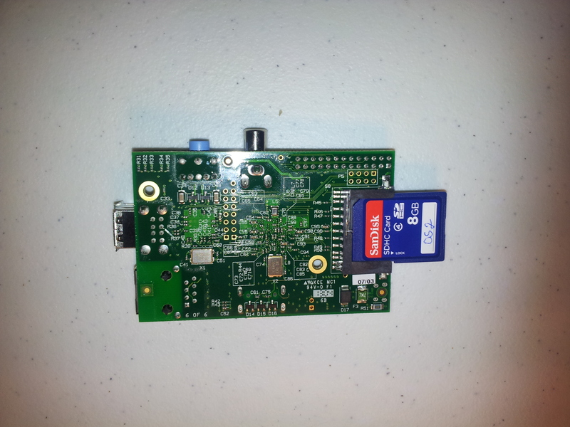 -
Configure your Raspberry Pi®
To get to the Raspberry Pi® config screen you will need to type the following command on the LxTerminal:
pi@raspberrypi ~ $ sudo raspi-config
The screen below should appear:
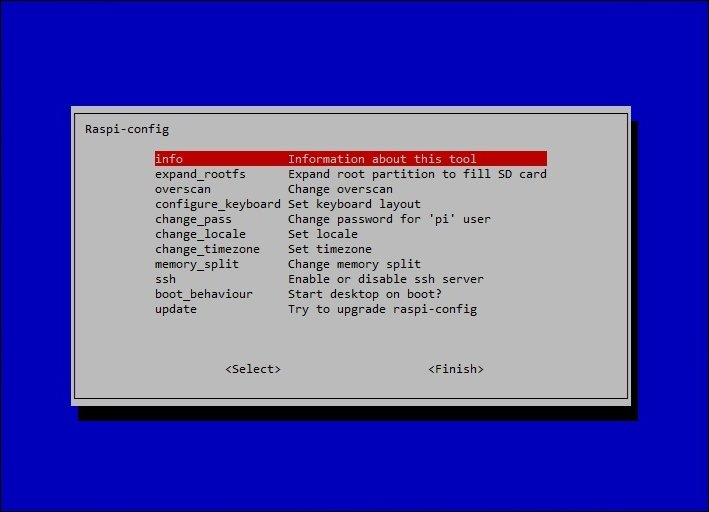
In this menu you can decide to setup your SSH password for extra security and set the local time. And also, configure the keyboard that you're currently using if you know the model name.
Complete the setup by selecting
Start desktop on bootand finallyFinish.Note: On a Raspberry Pi® / keyboard combination we tested, the keyboard map was incorrectly set, which caused incorrect characters to display when typing. If you have a similar issue, you can use the following command to manually set the keyboard map to 'us'.pi@raspberrypi ~ $ setxkbmap us
-
Check serial port with Minicom
Launch LxTerminal on the Raspberry Pi® and install Minicom from the following commands below:
pi@raspberrypi ~ $ sudo apt-get install minicom
Next type the following to enter the setup screen below
pi@raspberrypi ~ $ minicom -s
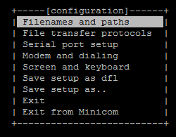
While in this menu go to
Serial Port Setup
Press
"A"and"Enter"to enter to configure the"Serial Device"If "modem" appears in the
"Serial Device"please rewrite "ttyUSB3" in it's place then press"Enter"twice.Upon returning to the minicom homescreen go to the option "exit" and press
"enter".While in this screen type the AT command
"ATZ"if you get a return"OK"it means that the serial port is working.Exit this screen by pressing
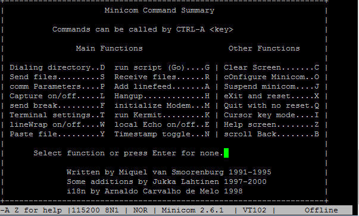"CTRL"and"A"then select"Q"to quit the menu and return to the terminal.
-
Trouble configuring your APN
Connect the BigPond® USB 4G dongle to a Windows workstation and download the “Aircard watcher” from here. Once the download is complete, launch the program.
- Once Watcher is launched, you will see a set of icons. Please press
“options”represented here as the spanner.
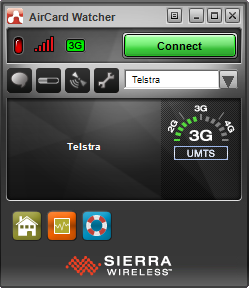
- Go to Profiles on the left side bar and you will see two profiles. Select
“Telstra”and under APN (Access Point Name) please rename this to“telstra.extranet”(ensure that it is typed lower case!) as shown in the diagram below.
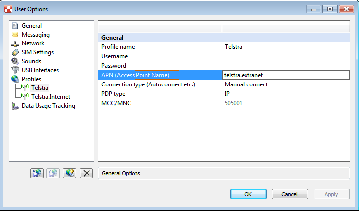
- Go back to the homescreen and press
“connect”. If the BigPond® USB 4G dongle connects, then it is working.
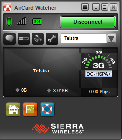
- Once Watcher is launched, you will see a set of icons. Please press
-
Git, and first steps with a GitHub account
Our references and explanation are relative to the use of Git, and more specifically GitHub. You should feel free to choose your favourite version control system. If you do choose to use GitHub, bear in mind that repositories in non-paid accounts are typically publicly visible, and this may not be what you want. You may wish to look at the following page which describes free plans for students.Git
We assume that you will have already been exposed to a version control system as part of your degree. If not, you may wish to follow the git tutorial, which will assist you in understanding this widely used version control system. The advantage of learning a system like this is that it greatly simplifies collaboration within your team.
GitHub
GitHub is a website which provides convenient online storage for git respositories. The purpose of this section is to get you familiar with how to use GitHub to share code.First go to the GitHub site, and create a user account.
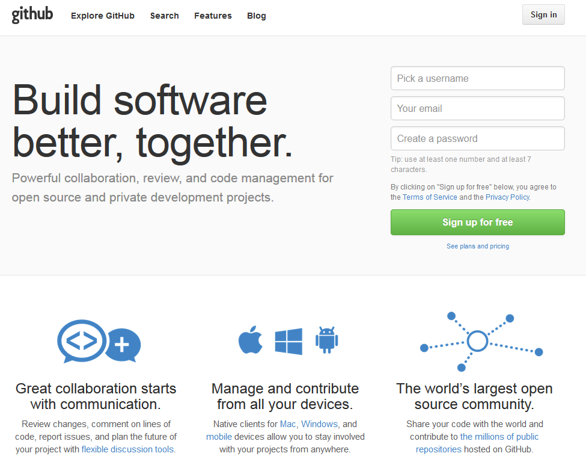Now with a GitHub account setup let's start the tutorial.
Perequisites: Internet connected computer running Windows, Mac or Linux.
Please Note: Before proceeding with these steps, ensure that you have permission to access this repository by sending the support team your GitHub user ID. If you don't, you will get a page 404 error.- Challenge - Fork
- Visiting the link https://github.com/telstra/m2m-university-challenge/
- Clicking on the 'Fork' button at the top right of the screen.
- Challenge - Clone
- Navigate to your own copy of the example repository; It will show as YourUserName/example toward the top left of the screen.
- If you want to use the desktop client, click the Clone in Mac / Clone in Windows button. This will prompt you to install the desktop client.
- Run the desktop client, and enter your GitHub username and password.
- Select the example repository by navigating to your user account (under the heading GitHub) and clicking on the example repository to clone it.
- Challenge - Modify your local copy
- Once you have this cloned, view the repository, and click on "open in explorer" from the tools menu.
- Use your favourite editor to add your name to the file.
- Return to the GitHub client - it will now flag your changes as 'uncommitted changes', and offer you an option to see your changes by clicking 'Show' Enter a commit message and description, then click commit. '
- In the next screen, you will see that you have unsynced commits. Click on the 'sync' button, which will cause a copy of your changes to be pushed back to GitHub.
- Navigate back to the repository page in GitHub. You will see that you now have a copy of the README in the respository which includes your name.
- Challenge - Request a merge into the main Telstra repository
- Click on the 'pull request' button.
- You should now see a form confirming that you'll be merging your change into the base repository telstra/example.
- Make sure you fill in a descriptive name for the pull request, and submit.
- Challenge - File an issue
- Click on the Issue button from the Telstra repository homepage at https://github.com/telstra/m2m-university-challenge/
- Select New Issue and fill in the template.
-
Attaching a RSA key to your GitHub account
You can conveniently identify yourself to GitHub by adding an RSA key to your account. Generating a key is just a couple of steps:
pi@raspberrypi ~ $ ssh-keygen -b 4096 [press 'Enter' three times] pi@raspberrypi ~ $ cat /home/pi/.ssh/id_rsa.pub
To enable you to access GitHub without a password, simply paste the text that printed after you issued the above command into the SSH key section in GitHub.
To do this, you perform the following steps:-
- Sign into your GitHub user account
- On the top right corner select
"Account Settings" - On the left menu bar select
"SSH keys" - While in this menu select
"Add SSH Keys" - Insert "Name", and paste the contents of your
id_rsa key.pubfile into the "Key" field - Select
"Add Key"and logout
By this point of the set-up you will have successfully completed the following steps:
In this section we will be setting you up with your own "cloud" or web server in the Telstra Cloud Lab environment. You can use this VM to store your own data from the Raspberry Pi® and if you choose to build a web application to display any data associated with your innovation.
As part of this Challenge you will have access to the Telstra M2M Control Centre, this is a commercial tool provided by Telstra to support our M2M customers. The Control Centre provides a number of capabilities such as real-time diagnostic support tools and real-time usage reporting.
In your M2M university Challenge kit this will contain an M2M SIM card. We have linked your SIM card to a M2M Control Centre account, we will start the activation of your M2M Control Centre account at the beginning of the challenge. When we start the activation you will receive an email, in the email there is a link to complete the activation. Click on the link and set your password, once this is done your M2M Control Centre activation is complete. You have 3 days to complete this step, if you miss the 3 day window please contact us via the M2M University Challenge email support and we can re-start the activate process. Once you have set your password this will take you to the M2M Control Centre log in page, for future reference the log in page is: https://telstra.jasperwireless.com
The M2M control centre will provide you with service details e.g. APN the SIM is connected to, usage profiles, IP address allocated. This can be helpful when troubleshooting connectivity issues. For more information on the M2M Control Centre capabilities go to this link .
Below are some troubleshooting tips for support during your device set up or during the Challenge. Additional information will be posted on the FAQ site during the challenge and questions can be answered via the support email address.
If you haven't been included to the https://GitHub.com/telstra/example.git repository authorised user list please email our support team and we will add you to give you permission to download the repository content.
Revision 2.0 Telstra M2M University Challenge 2013